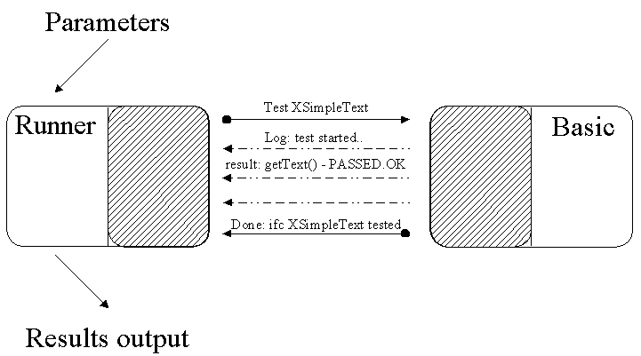
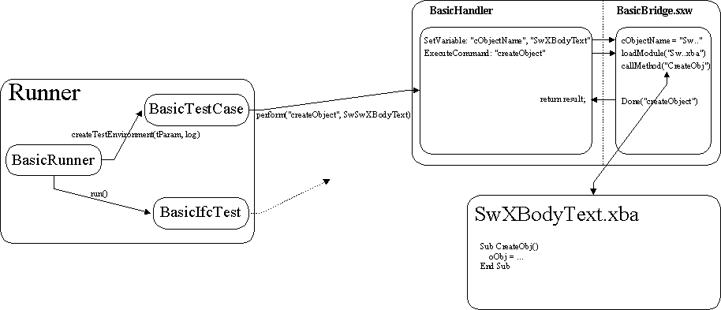

Communication Protocol
Commands
In this section commands that are understandable by BasicBridge are described.
- BASIC 'commands'. These commands
can be send to java by calling basicHandler.insertByName(cmd, arg):
("Connected", boolean) - a notification that BasicHandler instance and listeners were created successfully.
("BASIC_Done", PropertyValue(String functionName, Any result)) - means that function finished it's execution.
("BASIC_MethodTested", PropertyValue(String methodName, Boolean result)) - means that property/method was tested.
("BASIC_Log", String) - the string should be written to log file. - Java 'commands':
("SetValue", String) - execute an expression. Usually passed string should be like "VarName = Value". Variable VarName should be defined as Global.
("CreateObject", String) - create object with specified name
("TestInterface", [][]Any) - test interface. Description of methods/properties is passed in parameter.
("DisposeObject", NULL) - dispose current object.

Runner just tells BasicBridge that oan bject should be created and this will establish the connection between BASIC and Java. For this, the method CreateObject() of BasicBridge.sxw will be called. This method will load the appropriate library with the object-creation code and call the CreateObj() procedure. As a result, BASIC's global variable oObj will be set to the created object.
BasicBridge.sxw
The BasicBridge.sxw includes several Basic modules. Two of them - runner and test are used to control the execution of tests (establishing connection, loading required modules, calling of BASIC methods). There are also some helper modules. Functions from these modules are available from any other module (also from the BASIC tests modules) and should be used in tests. The main helper module is utils. It has functions for loading documents, converting paths to URLs and back among others. So, to create a writer document one should call the method utils.createDocument("swriter", "Doc_Name"). Module out is used for logging. To write some information to a log file one should use the out.Log(info) method. One very important module is the PropertyTester. It is used for testing properties (see the "Service file" section).

Timeouts and exceptions.
When the BasicBridge calls a BASIC function, it waits until this function is done. So, BASIC should send a "BASIC_Done" notification to java. Basic can send any kind of information to java (log, or result of method testing), and this will call the appropriate methods of the Runner. But the main thread of Runner will wait until "BASIC_Done" notification.
To determine that OpenOffice.org crashes or hangs, timeouts are used. This means that if there is no call from the BASIC tests for n seconds, an InterruptedTestException will be thrown to Runner and that will cause the killing and restarting of the Office.
BASIC tests can throw exceptions to Java. For this, a Basic_Log command should be sent with string parameter that starts with "Exception: ". This will raise a BasicException in Runner.
To make things easier a procedure Exception() exists in test module of BasicBridge.sxw. This procedure will write information about the exception to the log file. This information contains method name, where the exception occurred and the line number. To store the current method name, BasicBridge.sxw uses a global variable, cCurrMethodName (see "Interface file" section). Usually the exception handling in basic should be performed as follows:
Sub ...()
On Error Goto ErrHndl
...
End Sub
ErrHndl:
Test.Exception()
resume next
End Sub